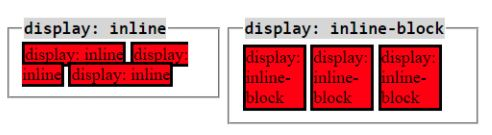

The display property specifies how an element should be displayed in a webpage. Inline and Inline-block are two of that properties.
With inline the element doesn't start on a new line and only takes just the width it requires, also respect left and right margins and padding but bottom margins and paddings are not respected.
Inline-block allows to set a width and height on the element, respect the top and bottom margins and padding and force a line break after the block element.
